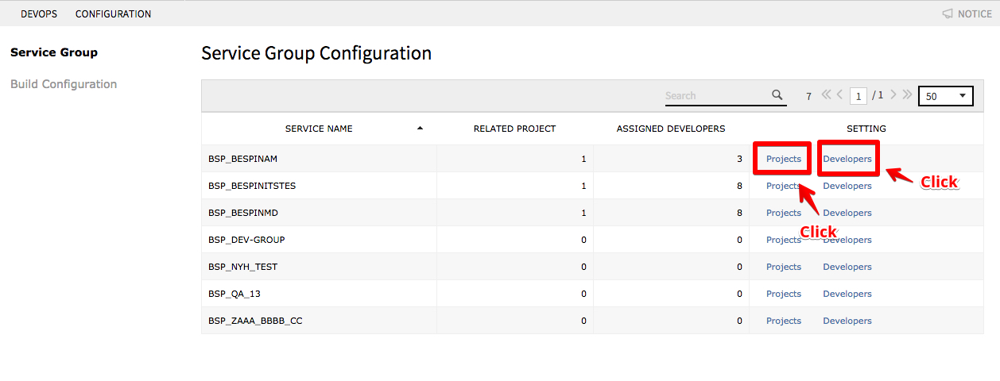
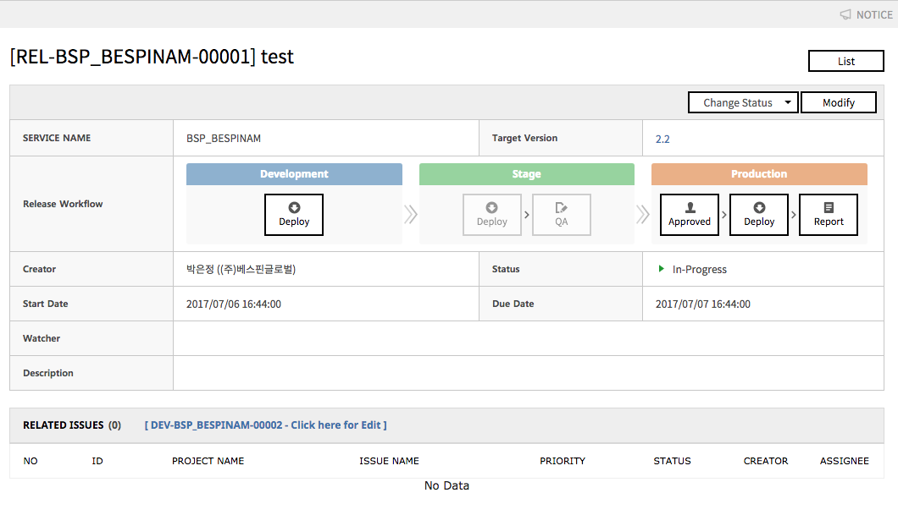

DevOps
개발 및 릴리스 계획, Build & Deploy 설정을 관리하며, End To End로 프로세스화 하여 관리할 수 있습니다.
개발 및 릴리스 업무 관리
Devops 서비스를 통한 서비스 별 릴리스 프로세스 관리 방법을 설명합니다.
사전 설정
1. 대상 서비스의 관리 주체 프로젝트와 프로세스, 릴리스 담당자를 설정합니다.
- Portal Service에서 등록한 서비스 그룹이 표시됩니다.

- 서비스 그룹을 관리하는 프로젝트를 연결하고, Workflow를 설정할 수 있습니다.
Workflow는 개발 phase(개발, 검증, 운영)별로 결제/배포/결과보고 3단계로 구성 가능합니다.- 프로젝트 매핑
- 매핑 시, Service Group의 코드로 Source Repository가 자동으로 생성됩니다.
- Workflow 설정
- 결제(Approval):Approval Service와 연동하여, 배포 전 결제 프로세스를 연동할 수 있습니다.
- 배포(Deploy) : 구성한 Build & Deploy 과정을 포함시킬 수 있습니다.
- 결과보고(Report): 배포 결과를 간단히 기록할 수 있습니다.

- 프로젝트 매핑
- 앞서 연결된 프로젝트의 구성원으로 DevOps의 권한 설정을 할 수 있습니다.
- 권한(Role)
- Leader : Build & Deploy 과정의 모든 권한을 소유합니다
- Member : Configration 메뉴 사용과 결제가 필요한 배포에 대하여 권한이 제한됩니다.
- 권한이 부여되면 계정의 ID로 Repository & Ci 서비스에 Read/Write 권한이 부여되며, 초기 Password가 이메일로 전송됩니다.

- 권한(Role)
2. Build 설정을 추가합니다.
Create New로 새로운 Build 설정을 추가할 수 있습니다.

- 서비스명 / Phase / 프로젝트명 / Repository Path(SVN) / Build Command(SVN) / Script(shell) Target server등을 설정합니다.
- Routung Check 설정
서버가 다중화 되어 있고, Routing을 지원하는 경우, 배포 시 서비스의 연속성을 보장하기 위한 설정입니다.
- Health Check Path
- 빌드 및 배포 전, 서버의 Health Check Path에 있는 파일을 변경하, Load Balancer에 의한 Routing을 차단하고 배폴ㄹ 진행하게 설정할 수 있습니다.
- Logic Check URL
- 배포 후, 입력한 URL 주소로 서버와의 Connection 상태를 화인하여, Health Check Path 파일을 복원하여 Routing을 정상화 할 수 있습니다.

- 배포 후, 입력한 URL 주소로 서버와의 Connection 상태를 화인하여, Health Check Path 파일을 복원하여 Routing을 정상화 할 수 있습니다.
- Health Check Path
- SR로 전달받아 수동으로 입력된 타겟 서버 목록을 조회하여 연결합니다.
3. 빌드 설정을 확인합니다.

개발계획 작성
1. Create New 버튼을 클릭하여, 개발 계획 작성화면으로 이동합니다.

2. 개발 계획 입력 양식을 작성합니다.
- 개발 계획 대상 서비스를 선택합니다.
- 릴리스 Target Version을 입력합니다.
- 개발 기간을 입력하고, 제목과 내용, 참조자를 입력합니다.
3. 프로젝트 서비스와 연동하여 관리되고 있는 개발 이슈를 연결합니다.
- Source Repository에 Commit 시, Commit Comment에 프로젝트 서비스의 Issue Key 번호를 첫째 줄에 입력하고, 두번째 줄 이후에 내용을 입력하면, 해당 내용이 Issue에 자동 등록되며, 해당 내용을 역으로 추적할 수 있습니다.
- Commit Log가 등록되어 있는 Issue를 개발 계획의 관련 이슈로 등록하면, 릴리스 계획의 하단에서 변경된 Source 목록을 확인할 수 있습니다.

릴리스 계획 작성
구현 및 검증이 완료된 개발계획에 대하여 Transfer to Release 버튼으로 릴리스 계획을 작성할 수 있습니다.

1. 릴리스 작업 계획을 작성합니다.
- 릴리스 계획 제목, 릴리스 작업 기간, 참조자를 입력합니다.
- 릴리스 내용은 사내에서 관리하는 작업명세서 양식에 따라 내용을 작성합니다.
2. 릴리스 목록을 확인합니다.
4. 릴리스 작업 진행
1. 릴리스 상세 내용을 확인합니다.
이 때, 관련 이슈는 개발 계획에서 연결한 이슈 목록이 표시되며, 해당 이슈에 등록된 Commit Log에 따라 변경된 소스 목록을 확인할 수 있습니다.
2. Configuration에서 설정한 Workflow에 따라 개별 Phase 별 프로세스를 진행합니다.

3. Apprival을 클릭하면, Approval 서비스와 연동되어 결재 작성화면으로 이동합니다.
결재 작성에 대한 설명은 Approval 서비스의 도움말을 참고하시기 바랍니다.

4. 결재 완료 시, Approved 상태로 변경되며, 해당 버튼을 클릭하면 결재 내역 페이지로 이동하여 확인할 수 있습니다.
5. Deploy 버튼이 활성화 되며, 해당 버튼을 클릭하여 배포 실행 화면으로 이동합니다.

Build & Deploy 진행
1. 빌드 설정 및 Deploy Type을 선택하여, 배포를 진행합니다.
Create New 버튼을 통해, Source Repository에서 Branch를 생성하고 해당 Branch를 배포할 수 있습니다.
2. Execute Result에서 Build 로그를 확인할 수 있습니다.

3. 배포 실행.
- 서비스 개발 Phase, 빌드 설정, 배포 소스, Sonar분석 여부 등을 입력합니다.
- Run Sonar를 통해 Sonarqube 소스 분석을 진행할 수 있습니다. Source의 양에 따라 분석 및 실행 시간이 추가로 소요됩니다.
- 배포 타입을 설정하여, 배포 대상인 Target Server에 순차 또는 병렬 배포를 진행할 수 있습니다.

Deploy 이력 확인

배포 후 완료 보고
1. Report 작성
- 배포가 완료되면, Release Plan의 상세 내에서 Report 버튼을 클릭하여 결과를 기록할 수 있습니다.
- 릴리스 성공여부 / Rollback 여부 / 서비스 중단 여부 / 중단 기간 / 검증 내용 / Rollback 내용 등을 기록합니다.

2. 릴리스 계획 종료
결과 작성이 완료되고, Close 버튼으로 릴리스를 완료하고, 개발 계획으로 이동합니다.
3. 개발 계획 종료
- Related Issue의 모든 이슈가 정상적으로 반영되고 처리되었는지 확인하고, 개발 계획의 Close버튼으로 개발 계획을 종료합니다.
- 개발 계획 종료 시, 연결되어 있는 관련 이슈의 상태가 모두 종료로 변경됩니다.
타 서비스 통합 운영 시나리오
아래의 서비스들과 연계하여 사용하면, DevOps를 통하여 요구사항 수집부터 개발 및 테스트, 서비스 릴리스까지 전 과정에서 보다 유기적이고 효율적으로 업무 수행이 가능합니다.
- SR / Project : 요구사항 수집
- Monitering / Alarm
- DBQCS : 데이터베이스 품질 관리
- Appoval : 개발 Phase별 승인 프로세스
DevOps 제약사항
- OS는 Ubuntu (Recommend Version 12.14)에서만 전체 검증 완료
- 아래와 같은 서비스 환경에서만 사용 가능
- Java(Recommend Version 1.7/1.8)
- Apache Tomcat (Recommend Version 7, 8) 구성
- ITS에۰ 배포시 사용할 SSH 접근 계정 생성 필요
- 배포 Server 초기화 Script 실행으로 아래와 같은 순서로 서버 자동 구성 가능
- JDK 설치 : Java Application(Recommend Version 1.8)
- SSH 접근 계정 설정
- Apache Tomcat 설치 (Recommend Version 8)
- 기타 제약 사항
- Build Tool은 Maven만 지원하며 Build Command 설정 후 사용 가능
- SCM은 : SVN, GIT, Bitbucket 구성만 지원 (상세 제약은 아래 항ּ 참고)
- Repository 생성, 권한 관리, 빌드, Sonar 분۱, 배포는 SVN 연동만 가능.
- 서비스에 Project Mapping 시, 서비스코드 Repository 자동구성(SVN Only).
- GIT / Bitbucket 사용 시, 현재 Commit Log와 Project Issue 연동만 가능하며, 해당 서버에 DevOps API를 설정해야 동작함
- CI 및 QA 구성
- CI : Jenkins
- QA : SonarQube